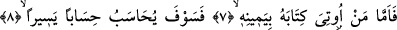

O HİÇBİR ZAMAN
RABBİNE DÖNMEYECEĞİNİ
SANDI
7. Kimin kitabı sağından verilirse,
8. Kolay bir hesapla hesaba çekilecek;
9. Ve sevinçli olarak âilesine dönecektir.
10. Kimin de kitabı arkasından verilirse,
11. Derhal yok olmayı isteyecek;
12. Alevli ateşe girecektir.
13. Zira o, (dünyada) âilesi içinde (mal-mülk sebebiyle) şımarmıştı.
14. O hiçbir zaman Rabbine dönmeyeceğini sandı.
15. Oysa gerçekten Rabbi onu görüyordu.
Buradaki “kim” kelimesinden maksad saîd mümindir. İfadedeki “men” iyelik
zamiridir. Burdan itibaren daha önce kısaca ifâde edilen mânâ, ayrıntısıyla verilmeye
başlanmaktadır.
“Kimin” uğrunda çaba sarfettiği amellerinin içinde yazılı olduğu “kitabı”, sağ taraftaki
meleğin yazacak olduğu ameli işlediği için “sağından verilirse…” Âyette “kitap”
kelimesinin yer almasının hikmeti şudur: Herhangi bir mükellef amellerinin yazıldığını,
kıyamet günü herkesin huzurunda bu amellerin arz edileceğini bilirse, bu gerçek, kişiyi
mâsiyetleri işlemekten daha fazla alıkoyucudur. Zira kul, efendisinin afv ve lutfuna
güvenip O’nun günahlarını örteceğine itimad ederse, bunu başkalarına ifşa edecek
efendiden utandığı gibi ondan utanmaz.
8. Kolay bir hesapla hesaba çekilecek;
Kitabı sağından verilen kimse, Allah’ın hikmeti gereği takdir edilmiş bir müddetten